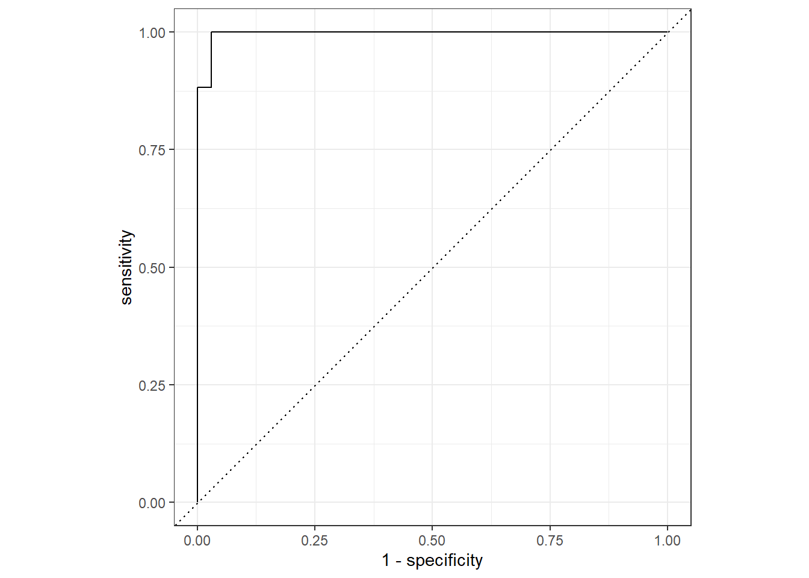
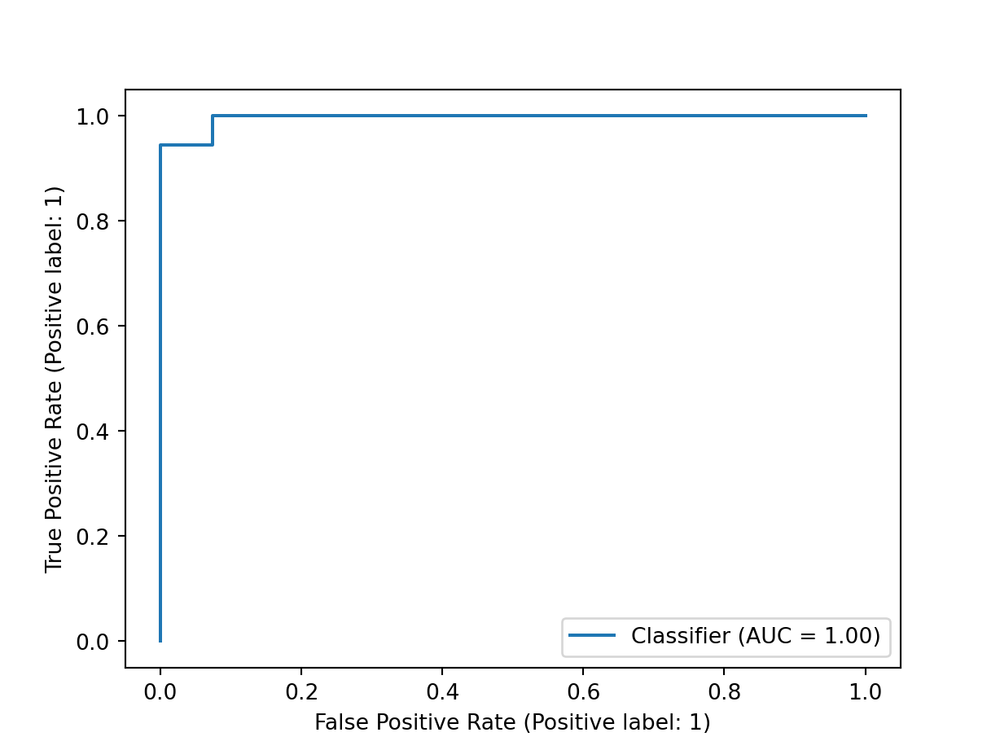

library(tidyverse)
library(tidymodels)One of the premiere machine learning modules in python is scikit-learn and it’s going to be the first place I’m going to start in my journey of learning the python language. I am going to go through the process of building a simple logistic regression model using the tidymodels package in R, and compare it to the process of scikit-learn in python.
In this example, I will be using the palmerpenguins dataset found in the below link.
url <- 'https://gist.githubusercontent.com/slopp/ce3b90b9168f2f921784de84fa445651/raw/4ecf3041f0ed4913e7c230758733948bc561f434/penguins.csv'The overall goal is to do a series of very standard steps in training a binary classifier (Logistic Regression).
- Read in the dataset
- Split the dataset into a training and testing set
- Train the model on the training set
- Evaluate the model on the testing set
tidymodels
Let’s start off with reading in the dataset in R
data <- read_csv(url, show_col_types = FALSE)
data# A tibble: 344 × 9
rowid species island bill_length_mm bill_depth_mm flipper_length_mm
<dbl> <chr> <chr> <dbl> <dbl> <dbl>
1 1 Adelie Torgersen 39.1 18.7 181
2 2 Adelie Torgersen 39.5 17.4 186
3 3 Adelie Torgersen 40.3 18 195
4 4 Adelie Torgersen NA NA NA
5 5 Adelie Torgersen 36.7 19.3 193
6 6 Adelie Torgersen 39.3 20.6 190
7 7 Adelie Torgersen 38.9 17.8 181
8 8 Adelie Torgersen 39.2 19.6 195
9 9 Adelie Torgersen 34.1 18.1 193
10 10 Adelie Torgersen 42 20.2 190
# ℹ 334 more rows
# ℹ 3 more variables: body_mass_g <dbl>, sex <chr>, year <dbl>Since logistic regression is a binary classifier, we will convert the species variable into a binary outcome. The outcome we are going to train the model for is ‘Chinstrap’ vs ‘Not Chinstrap’.
data <- data |>
mutate(
outcome = case_when(
species == 'Chinstrap' ~ 1,
.default = 0
),
outcome = factor(outcome)
)Now that we have the outcome coded, we can split the data into a training and testing set. We will use the initial_split function from the rsample package to split the data into a 75/25 split.
set.seed(1)
split <- initial_split(data, strata = outcome)
train <- training(split)
test <- testing(split)
train# A tibble: 258 × 10
rowid species island bill_length_mm bill_depth_mm flipper_length_mm
<dbl> <chr> <chr> <dbl> <dbl> <dbl>
1 1 Adelie Torgersen 39.1 18.7 181
2 2 Adelie Torgersen 39.5 17.4 186
3 5 Adelie Torgersen 36.7 19.3 193
4 9 Adelie Torgersen 34.1 18.1 193
5 10 Adelie Torgersen 42 20.2 190
6 12 Adelie Torgersen 37.8 17.3 180
7 13 Adelie Torgersen 41.1 17.6 182
8 14 Adelie Torgersen 38.6 21.2 191
9 15 Adelie Torgersen 34.6 21.1 198
10 16 Adelie Torgersen 36.6 17.8 185
# ℹ 248 more rows
# ℹ 4 more variables: body_mass_g <dbl>, sex <chr>, year <dbl>, outcome <fct>test# A tibble: 86 × 10
rowid species island bill_length_mm bill_depth_mm flipper_length_mm
<dbl> <chr> <chr> <dbl> <dbl> <dbl>
1 3 Adelie Torgersen 40.3 18 195
2 4 Adelie Torgersen NA NA NA
3 6 Adelie Torgersen 39.3 20.6 190
4 7 Adelie Torgersen 38.9 17.8 181
5 8 Adelie Torgersen 39.2 19.6 195
6 11 Adelie Torgersen 37.8 17.1 186
7 18 Adelie Torgersen 42.5 20.7 197
8 21 Adelie Biscoe 37.8 18.3 174
9 35 Adelie Dream 36.4 17 195
10 38 Adelie Dream 42.2 18.5 180
# ℹ 76 more rows
# ℹ 4 more variables: body_mass_g <dbl>, sex <chr>, year <dbl>, outcome <fct>Now that we have the data split, we can pre-process the data using the recipe package. Within recipe, we will define the outcome variable outcome as well as define the predictor variables bill_length_mm, bill_depth_mm, flipper_length_mm, and body_mass_g. Since there are a number of missing data, we are going to use the step_impute_bag function to impute the missing data. We will then normalize the predictor variables using the step_normalize function.
rec <-
recipe(outcome ~ bill_length_mm + bill_depth_mm + flipper_length_mm + body_mass_g,
data = data) |>
step_impute_bag(all_predictors()) |>
step_scale(all_numeric_predictors())
rec── Recipe ──────────────────────────────────────────────────────────────────────── Inputs Number of variables by roleoutcome: 1
predictor: 4── Operations • Bagged tree imputation for: all_predictors()• Scaling for: all_numeric_predictors()Next we are going to define a logistic regression model specification using the logistic_reg function from the parsnip package. We will also define the engine as ‘glm’ and the mode as ‘classification’.
glm_spec <- logistic_reg() |>
set_engine('glm') |>
set_mode('classification')
glm_specLogistic Regression Model Specification (classification)
Computational engine: glm Now we are going to combine the recipe and model specification into a workflow using the workflow function from the workflows package. We will then use the last_fit function to train the model in the training set, and assess the model on the testing set.
wf <- workflow(rec, glm_spec)
lf <- last_fit(wf, split)→ A | warning: All predictors are missing; cannot imputeThere were issues with some computations A: x1→ B | warning: glm.fit: fitted probabilities numerically 0 or 1 occurredThere were issues with some computations A: x1
There were issues with some computations A: x2 B: x1lf# Resampling results
# Manual resampling
# A tibble: 1 × 6
splits id .metrics .notes .predictions .workflow
<list> <chr> <list> <list> <list> <list>
1 <split [258/86]> train/test split <tibble> <tibble> <tibble> <workflow>
There were issues with some computations:
- Warning(s) x2: All predictors are missing; cannot impute
- Warning(s) x1: glm.fit: fitted probabilities numerically 0 or 1 occurred
Run `show_notes(.Last.tune.result)` for more information.We can then assess the performance of the model on the test set using the conf_mat function from the yardstick package.
cm <- lf |>
collect_predictions() |>
conf_mat(truth = outcome, estimate = .pred_class)
cm Truth
Prediction 0 1
0 68 2
1 0 15summary(cm, event_level = 'second')# A tibble: 13 × 3
.metric .estimator .estimate
<chr> <chr> <dbl>
1 accuracy binary 0.976
2 kap binary 0.923
3 sens binary 0.882
4 spec binary 1
5 ppv binary 1
6 npv binary 0.971
7 mcc binary 0.926
8 j_index binary 0.882
9 bal_accuracy binary 0.941
10 detection_prevalence binary 0.176
11 precision binary 1
12 recall binary 0.882
13 f_meas binary 0.938roc <- lf |>
collect_predictions() |>
roc_curve(truth = outcome, .pred_1, event_level = 'second') |>
autoplot()
roc
scikit-learn
Let’s start off with loading the pandas module and read in the dataset using the read_csv method.
import pandas as pd
url = 'https://gist.githubusercontent.com/slopp/ce3b90b9168f2f921784de84fa445651/raw/4ecf3041f0ed4913e7c230758733948bc561f434/penguins.csv'
data = pd.read_csv(url)
data rowid species island ... body_mass_g sex year
0 1 Adelie Torgersen ... 3750.0 male 2007
1 2 Adelie Torgersen ... 3800.0 female 2007
2 3 Adelie Torgersen ... 3250.0 female 2007
3 4 Adelie Torgersen ... NaN NaN 2007
4 5 Adelie Torgersen ... 3450.0 female 2007
.. ... ... ... ... ... ... ...
339 340 Chinstrap Dream ... 4000.0 male 2009
340 341 Chinstrap Dream ... 3400.0 female 2009
341 342 Chinstrap Dream ... 3775.0 male 2009
342 343 Chinstrap Dream ... 4100.0 male 2009
343 344 Chinstrap Dream ... 3775.0 female 2009
[344 rows x 9 columns]Now that we have the data read into memory, let’s convert the species variable into a binary outcome. The most intuitive method I found to do this is to use the where method from the numpy module. This appears most similar to the mutate with the ifelse function in R.
import numpy as np
data['outcome'] = np.where(data['species'] == 'Chinstrap', 1, 0)
data rowid species island ... sex year outcome
0 1 Adelie Torgersen ... male 2007 0
1 2 Adelie Torgersen ... female 2007 0
2 3 Adelie Torgersen ... female 2007 0
3 4 Adelie Torgersen ... NaN 2007 0
4 5 Adelie Torgersen ... female 2007 0
.. ... ... ... ... ... ... ...
339 340 Chinstrap Dream ... male 2009 1
340 341 Chinstrap Dream ... female 2009 1
341 342 Chinstrap Dream ... male 2009 1
342 343 Chinstrap Dream ... male 2009 1
343 344 Chinstrap Dream ... female 2009 1
[344 rows x 10 columns]Now that we have the outcome coded, we can split the data into a training and testing set. We will use the train_test_split method from the sklearn module to split the data into a 75/25 split. The sklearn module appears to t
from sklearn.model_selection import train_test_split
X = data.loc[:, ['bill_length_mm', 'bill_depth_mm', 'flipper_length_mm', 'body_mass_g']]
y = data.loc[:, 'outcome']
X_train, X_test, y_train, y_test = train_test_split(X, y, random_state = 1)We will use a pipeline to pre-process the data using the KNNImputer and StandardScaler function from the sklearn module. We will then train the model using the LogisticRegression method.
from sklearn.linear_model import LogisticRegression
from sklearn.impute import KNNImputer
from sklearn.pipeline import make_pipeline
from sklearn.preprocessing import StandardScaler
pipe = make_pipeline(KNNImputer(), StandardScaler(), LogisticRegression())
pipe.fit(X_train, y_train)Pipeline(steps=[('knnimputer', KNNImputer()),
('standardscaler', StandardScaler()),
('logisticregression', LogisticRegression())])In a Jupyter environment, please rerun this cell to show the HTML representation or trust the notebook. On GitHub, the HTML representation is unable to render, please try loading this page with nbviewer.org.
Pipeline(steps=[('knnimputer', KNNImputer()),
('standardscaler', StandardScaler()),
('logisticregression', LogisticRegression())])KNNImputer()
StandardScaler()
LogisticRegression()
Now that the model is fit, let’s assess the model performance using the confusion_matrix and classification_report function from the sklearn module.
from sklearn.metrics import confusion_matrix, classification_report, roc_auc_score, RocCurveDisplay
confusion_matrix(y_test, pipe.predict(X_test))array([[68, 0],
[ 1, 17]], dtype=int64)roc_auc_score(y_test, pipe.predict_proba(X_test)[:, 1])0.9959150326797386cr = classification_report(y_test, pipe.predict(X_test))
print(cr) precision recall f1-score support
0 0.99 1.00 0.99 68
1 1.00 0.94 0.97 18
accuracy 0.99 86
macro avg 0.99 0.97 0.98 86
weighted avg 0.99 0.99 0.99 86RocCurveDisplay.from_predictions(y_test, pipe.predict_proba(X_test)[:, 1])<sklearn.metrics._plot.roc_curve.RocCurveDisplay object at 0x000001FCCBD526B0>
Reuse
Citation
BibTeX citation:
@online{luu2024,
author = {Luu, Michael},
title = {Scikit-Learn {Practice} {From} the {Perspective} of an {R}
{User}},
date = {2024-02-02},
langid = {en}
}
For attribution, please cite this work as:
Luu, Michael. 2024. “Scikit-Learn Practice From the Perspective of
an R User.” February 2, 2024.